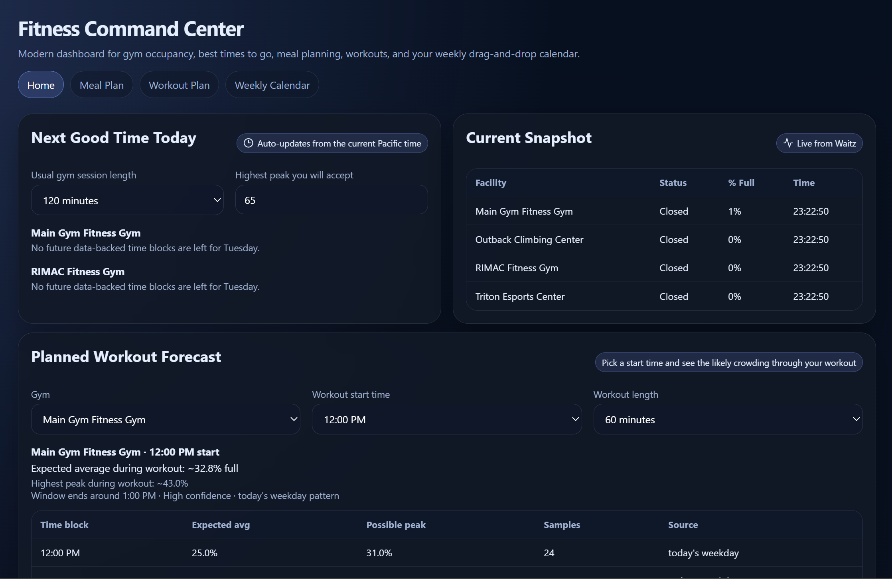
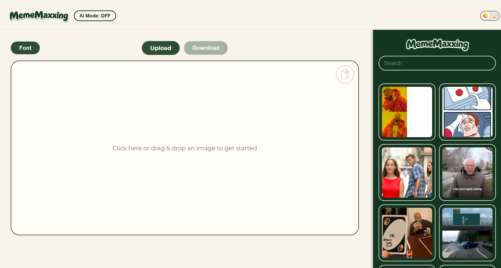

UCSD Gym Planner
Figuring out when to go to the gym
The idea was to make it easier to check how crowded the UCSD gyms are before going. The dashboard brings that information together with tools for planning a workout.

Computer Engineering · UC San Diego
These are some of the projects I've worked on. I go over what each one does, how I built it, and a few of the things I had to figure out along the way. I also included more about my background and an idea I'd like to work on next.
UCSD Gym Planner
The idea was to make it easier to check how crowded the UCSD gyms are before going. The dashboard brings that information together with tools for planning a workout.

Bad Decisions Analytics · CSE 135
I built this for CSE 135 to see what was happening on a test website. It collects activity so I can look through things like errors, loading times, and how people move from one page to another.
Meme Generator · CSE 110 team project
My team built this for CSE 110. Someone can upload an image or pick a template, add their text, and download the meme. We wanted those steps to be easy to follow.
